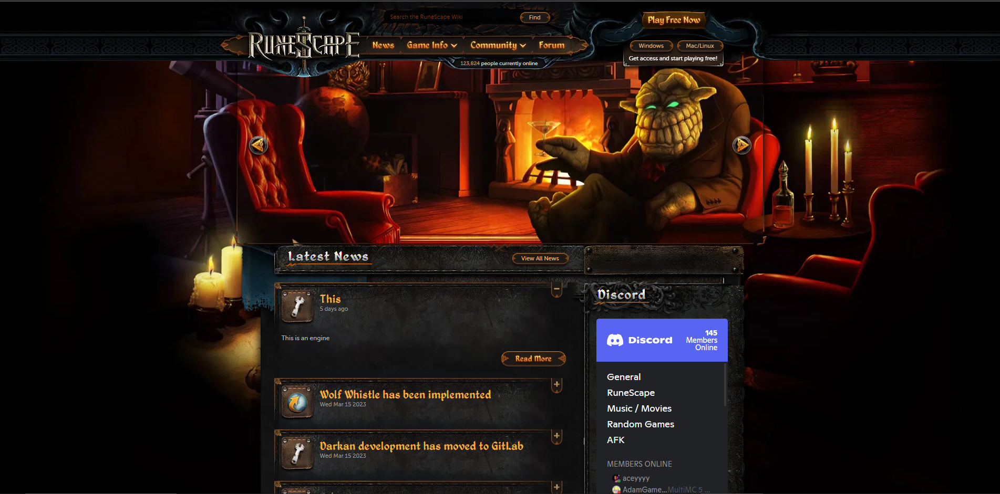
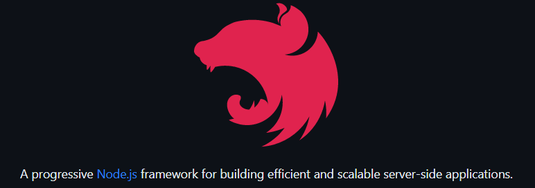

Jesse Guerrero
Software Development
Darkan
Worked with Darkan founder Trent Kress and friends to make a 2012 remake of the MMORPG, Runescape. The project is purely educational with the intent of using the latest stacks and technologies to better serve our employers
Links
GitHub: https://github.com/DarkanRS
Team: https://gitlab.com/groups/darkanrs/-/group_members
Game live: https://darkan.org
Darkan Websites
Worked on 2 editions out of 3 of the Darkan website. Across these editions the technologies used were: Java Spring Boot, React, Node, Express, MongoDB and NestJS(Typescript API)
The latest edition was copied from Archive.org and was integrated with the Darkan API along with a custom implementation of a blog CMS. It will go live soon

Links
Current Darkan Website: https://darkan.org
Current GitHub: https://github.com/DarkanRS/website
Latest Website Github: https://github.com/JesseGuerrero/Runescape-2012-website-remake
Darkan API
Worked on the public facing API for Darkan with the Darkan founder. It includes 25+ endpoints which control the game server from outside its environment in addition to providing access to its database

Links
GitLab: https://gitlab.com/JesseGuerrero/darkanapi/-/tree/dev-patch-4b8e?ref_type=heads
Adversarial Deep Learning With Mutation

Worked with 2 professors directly for my thesis and studied machine learning in graduate school. I wrote the code and procured datasets used for 3 papers. The code for the 3 papers is below
Links
GitHub: https://github.com/JesseGuerrero/Mutation-Based-Text-Detection
Papers here: https://scholar.google.com/citations?user=7tsIRXYAAAAJ&hl=en
NS3 SDN Network Emulation
Used a networking framework in C++, NS3, to test an SDN network for performance differences with and without Quic encryption. This work was published on ArXiv. Below is a demo of an NS3 SDN network and its paper
Links
GitHub: https://github.com/JesseGuerrero/Computer-Networks-5306-Semester-Project
Paper: https://papers.ssrn.com/sol3/papers.cfm?abstract_id=4384690